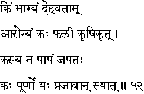

|

|
Verse 52 - Meaning:
Q:What (kim) is the greatest good fortune (bhaagyam) for an embodied being (dehavataam)?
A:Sound Health. (aarogyam)
Q:Who (kah) reaps the fruits (phalii) ?
A:That one who works well in his field. (krsikrt)
Q:Who (kasya) will be free from sins (na-paapam)?
A:One who continuously repeats (japatah) the name of the Lord.
Q:Who (kah) has attained fulfilment (puurno) ?
A:He who (yah-syaat) has a virtuous progeny (prajaavaan)
|